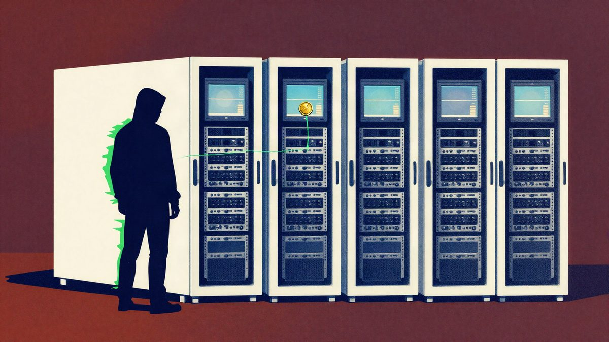

Optimizely je hakiran: zlonamjerni kod stigao na Zoom, GitLab, BBC i CNN, ukradena kripto sredstva

Napadač je 16. studenoga preko Optimizely Web platforme poslužio zlonamjerni JavaScript posjetiteljima 178 organizacija, među njima Zooma, GitLaba, BBC-ja i CNN-a. Kod je zamjenjivao adrese kripto novčanika, krao podatke o karticama, a na starijim iPhoneima pokušavao instalirati exploit kitove. Do 19:25 UTC na novčanike napadača stiglo je oko 6.500 eura.
Napadač je 16. studenoga 2026. preko Optimizely Web platforme za eksperimentiranje poslužio zlonamjerni JavaScript posjetiteljima 178 organizacija. Na popisu su neki od najposjećenijih sajtova na svijetu: Zoom, BBC, CNN, Salesforce, GitLab, IKEA, HSBC, Equifax, Air France-KLM, Ledger i Peacock. Report URI u svojoj analizi navodi da je bilo zaraženo 188 Optimizely snippeta, a kripto je već ukraden.
Kako je napad radio
Svaki klijent Optimizely Weba učitava JavaScript snippet s Optimizelyjeva CDN-a. Snippet sadrži Optimizelyjev kod, klijentove eksperimente i opcionalno polje Project JavaScript, u koje klijent upisuje vlastiti kod koji se izvodi na svakoj stranici. Napadač je svoj kod upisao upravo u to polje u projektima klijenata, a ostatak snippeta ostao je nepromijenjen. File se i dalje posluživao s cdn.optimizely.com, s Optimizelyjevim certifikatom, pa su ga svi pogođeni sajtovi smatrali pouzdanim. Pogođeni su i klijenti koji snippet poslužuju s vlastite domene, jer sadržaj dolazi iz istog Optimizely projekta.
Kako je napadač dobio pravo upisa u toliko nepovezanih projekata, nije poznato. Report URI smatra da to mora objasniti Optimizely. CDN nije bio žrtva trovanja cachea, samo je poslužio točno ono što je dobio. Zlonamjerni kod imali su i snippeti za www.optimizely.com i login.optimizely.com.
Što je kod radio
Skripta track.js bila je višenamjenska, a svi njezini dijelovi bili su aktivni istodobno. Valjane adrese novčanika (BTC, ETH i EVM mreže, TRON, Solana, TON, Litecoin, Bitcoin Cash, Dogecoin) mijenjala je adresama napadača, uz provjeru checksuma. Od 14:43 po hrvatskom vremenu pratila je i forme te fetch/XHR POST zahtjeve u potrazi za brojem kartice, datumom isteka i CVV-om, a podatke je slala na 1688360.cc. Kartice unesene u hostane payment iframeove (Stripe, Adyen) bile su izvan njezina dosega. Skripta je kradla i cookieje te screenshotove.
Na iPhoneima i iPadima učitavala je exploit kitove Coruna i DarkSword. Prema komentarima u samom kitu, zakrpani su iOS 18.7.3 i noviji te iOS 26.3 i noviji. Stranice na iOS-u 18.6 ili starijem osvježavale su se svakih 60 sekundi kako bi exploit pokušao ponovno.
Šteta i stanje sanacije
Do 20:25 po hrvatskom vremenu 16. studenoga na novčanike napadača stiglo je oko 7.040 dolara (oko 6.500 eura), i to u otprilike devet sati. Sredstva su prebačena između 14:03 i 14:05 po hrvatskom vremenu, a USDC na Ethereumu otišao je na HitBTC deposit adresu. TRON novčanik koristi se od ožujka 2026., pa je napadač bio aktivan i prije ovog napada. Koliko je kartica i cookieja stiglo na 1688360.cc, nije poznato.
Report URI provjerio je 1.611 različitih snippeta, a stvarni broj zaraženih vjerojatno je veći. U 22:52 po hrvatskom vremenu zlonamjerni kod ostao je samo u jednom od 188 zaraženih snippeta, onom tvrtke TalkTalk, dok ih je u 21:56 po hrvatskom vremenu bilo 169.
Što je pomoglo
Od 256 provjerenih organizacija njih 24 bilo je zaštićeno restriktivnim script-src pravilom u CSP-u, koje navodi samo potrebne hostove i tako blokira 1688360.cc. Dodatnih 17 imalo je djelomičnu zaštitu zahvaljujući connect-src pravilu. Ono je spriječilo krađu kartica, cookieja i screenshotova, ali ne i zamjenu adresa, jer se ona događa unutar same stranice. Optimizely se do objave analize nije odazvao na pokušaje kontakta, tvrdi Report URI.
Izvor: Hacker News
Povezani članci
 Qoo10 hakiran: izloženi podaci više od 30 milijuna članova, među njima adrese i geokoordinate13. studenoga 2026.
Qoo10 hakiran: izloženi podaci više od 30 milijuna članova, među njima adrese i geokoordinate13. studenoga 2026.- McDonald’s Japan? Ne, Matsuya: procurili podaci 2,38 milijuna korisnika aplikacije30. listopada 2026.
 Istraživanje: 21 od 42 AI chatbota šalje naslove razgovora oglašivačkim trackerima17. studenoga 2026.
Istraživanje: 21 od 42 AI chatbota šalje naslove razgovora oglašivačkim trackerima17. studenoga 2026.